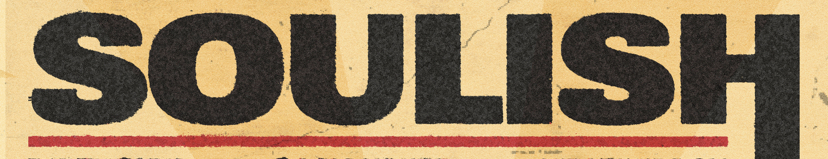

- Cole
- Chris
- Hector
- Ernesto
- Jakob
- Josh

Formed in 2020, Soulish is a 6-piece Indie-Soul band from Toronto. We are a diverse group of members united by a love of music, storytelling, and a drive to perform by leaning into our unique backgrounds to create a musical experience like no other. Our distinctive sound blends the rhythmic and storytelling aspects of Hip-Hop/RnB with the raw energy and experimental edge of Indie Rock and Alternative music. Our eclectic range of influences lead to a vibe that sounds both spontaneous and sample-based, almost like The Weeknd and Arctic Monkeys morphed into one group. The variety of genres and life experiences we weave together is representative of our cumulative experiences growing up in the cultural melting pot that is Toronto. Sharing our stories of struggle, ambition, love, and relationships with a sense of humor that keeps the vibe fun and lively.
Lead by Cole Solish as the Rhythm Guitarist, Soulish is dedicated to exploring genre-bending techniques to craft a unique sonic signature. Lead Vocalist Chris Hylton asserts his classical vocal training to provide a lens into the lives and stories of a band through his immense talent and raw emotional feel. The Rhythm section is comprised of brothers Hector and Ernesto Alonso on Drums and Bass respectively. Their musical connection is unmatched and creates the backbone of our musical chemistry. The band is rounded out by life-long friends Jakob Goldstein and Joshua Napal carrying the Lead Guitar and Synthesizer responsibilities. Their unique approach to song craft and improvisation are key to creating a unique experience night in and night out.
Soulish has been tearing our way through the Toronto music scene playing with a variety of bands, and promoters in venues across the GTA, including Sneaky Dee's, The Rivoli, and Lee's Palace. With our growing fanbase we have been provided opportunities to play larger events such as headlining for Toronto based promotion company A-Minor's 7-year anniversary show. Soulish is currently working with Toronto based musician Robb Cappelletto on two upcoming EP's. These EP's are set for release in 2023.
April 28, 2022
Lee's Palace
U-Turn